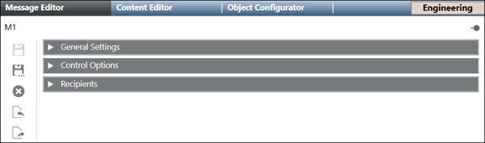
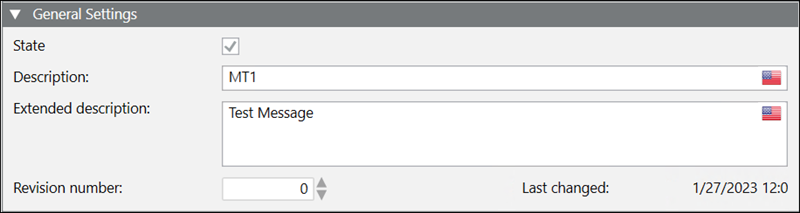
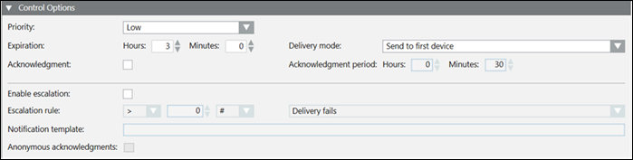
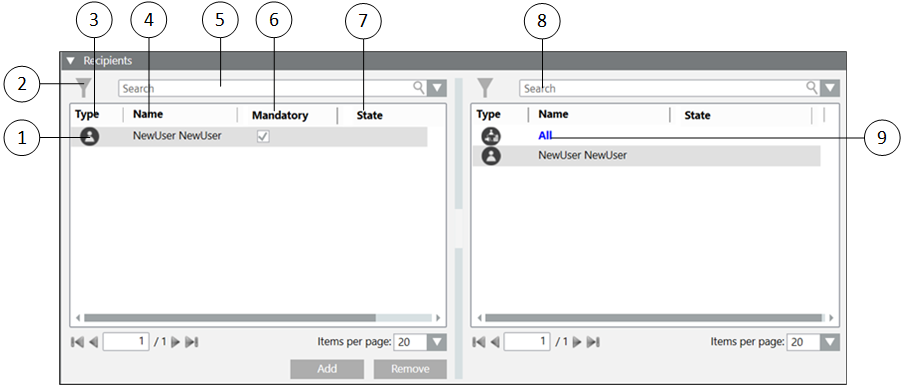

Message Editor

- General Settings: Configure the message description along with the message type and revision number.
- Control Options: Configure the message priority, escalation with other details like delivery mode and expiration time.
- Recipients: Add or remove recipients for the message template.
General Settings
The General Settings expander in Message Editor tab displays as shown in the following image:

- State: Check the box to active the notification template.
- Description: Enter the description for the message template.
- Extended description: Enter an extended description for the message template.
- Revision number: Select the revision number for the message template.
- Last changed: Displays the date and time of the last changes made to the message template.
Control Options
The Control Options expander in the Message Editor tab is as shown in the following image:

- Priority: Select the priority of the message. The drop-down list contains the following priorities:
- Low
- BelowNormal
- Normal
- AboveNormal
- High
- NOTE: This priority value is useful for different types of Notification supported devices. In case of ESPA devices, every message priority is mapped to ESPA 4.4.4 priority values. For example, a notification priority High can be associated with ESPA 4.4.4 priority value Alarm (Emergency).
- Expiration: Select the expiration time for the message. The minimum expiration time is 1 minute and the maximum expiration time is 999 hours and 59 minutes. The default expiration time is 3 hours.
NOTE: The message is removed from the recipient devices and response collection stops after the expiration time. - Acknowledgment: When a message template has the Acknowledgment check box selected, recipient users can provide read acknowledgments by manually replying to the messages received on recipient user devices.
- Enable escalation: Select the check box to enable escalation configuration. Also, recursive escalation can be configured.
For more information about recursive escalation, see Incident Template Structure Expander in Incident Template Workspace - Escalation rule: Enabled only if the Enable escalation check box is selected. It allows you to:
- Select the operator like less than <, greater than >, and so on from the drop-down list.
- Enter the value.
- Select the percentage % or exact value indicator # from the drop-down list.
- Select the condition for escalation from the drop-down list.
For example, select Delivery fails, if you want to escalate a message if the message delivery fails for more than five Recipient Users. - The operator to be selected for the above case must be greater than >.
- The value to be selected must be 5.
- The exact value indicator # must be selected from the drop-down list.
- The condition to be selected must be Delivery fails.
The Acknowledged recipients escalation rule option requires that the Acknowledgment option is enabled.
- Notification Template: Enabled only if the Enable escalation check box is selected. Notification templates to be launched should meet the escalation rule. Message templates that are part of an incident template let you select a targeted notification template from the drop-down list. Alternatively, you can drag a stand-alone notification template from the System Browser hierarchy to configure the targeted notification template.
NOTE: Notification templates cannot be dragged for escalation in Windows App clients. For Windows App clients, you need to select a targeted notification template from the drop-down list. - Anonymous acknowledgments: Select this box to include the acknowledgments that are not mapped to any recipient user as valid acknowledgments to be considered for the escalation rule.
- Delivery mode: Select the mode of delivery of the message to the recipient user. The available options are:
- Send to first device: The message is sent to the device first configured in the recipient user devices list. The message is not sent to other device irrespective of delivery failure/non-acknowledgment.
- Send to devices in sequence upon failure: The message is sent to the recipient user devices in sequence. In case of delivery failure for this device, the message is sent to the next device in sequence.
- (Available only for Reno Plus license users) Send to all devices at once: The message is sent to all devices in the recipient user devices list at a time.
- (Available only for Reno Plus license users) Send to device in sequence on non-acknowledgment: The message is sent to the device in sequence of the recipient user devices list. If the message is not acknowledged within the acknowledgment period, then the message is sent to the next device in the sequence.
- Acknowledgment Period: Define the time period starting from the start of delivery of a message during which the system will collect and evaluate the acknowledgments. For unscheduled messages, start of delivery is the same as launch time. For scheduled messages, start of delivery is the time when the message is switched to Active state.
Recipients
The Recipients expander in the Message Editor is as shown in the following image:

| Name | Description |
1 | NA | Displays the list of the recipients added to the message template. |
2 | Filter recipients | Filters the recipients as per their categories (for example, Users and Groups) |
3 | Type | Displays the icons of the recipient type for the available recipients. |
4 | Name | Indicates the name of the recipient. |
5 | Search | Search for a particular recipient from the list of added recipients for the message. |
6 | Mandatory | Select this check box to make the recipient a mandatory recipient of the message that cannot be unselected during a message launch. |
7 | State (Available only for Reno Plus license users) | Displays the state of the recipient. Following is the list of all the recipient states:
|
8 | Search | Search for a particular recipient from the list of available recipients. |
9 | NA | Displays the list of the available recipients. |